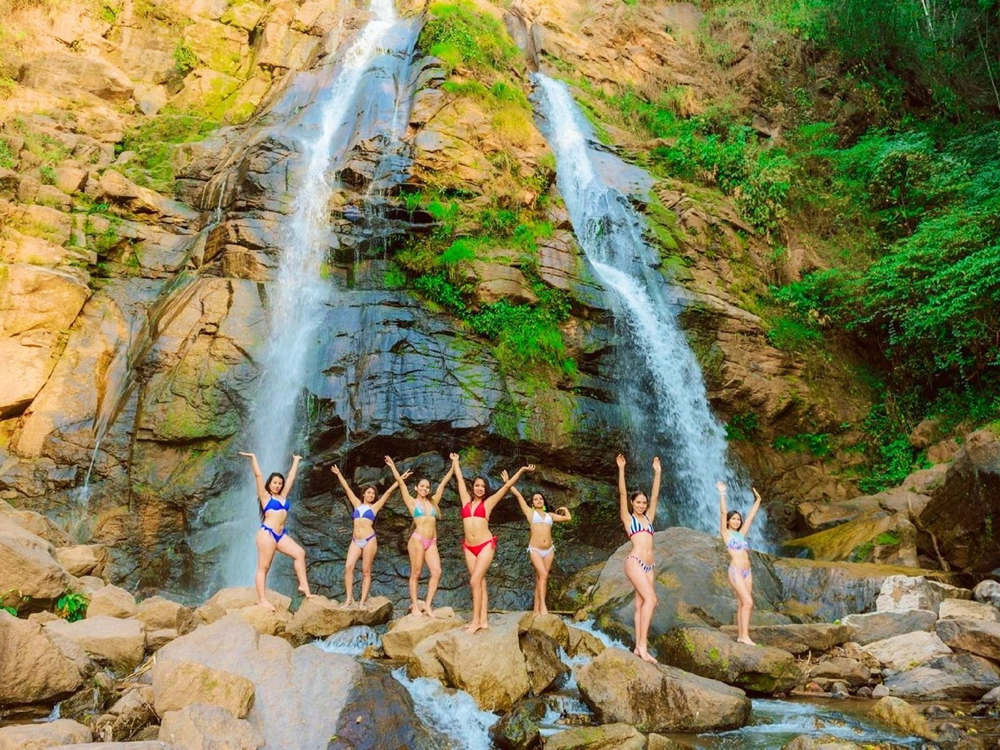
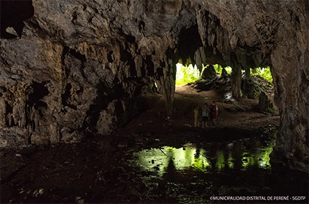
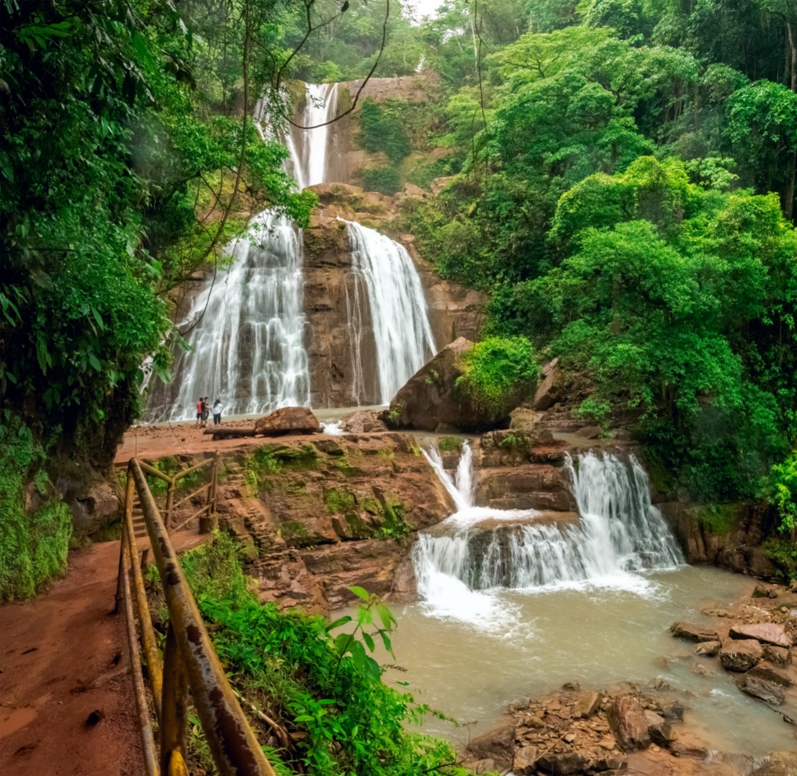
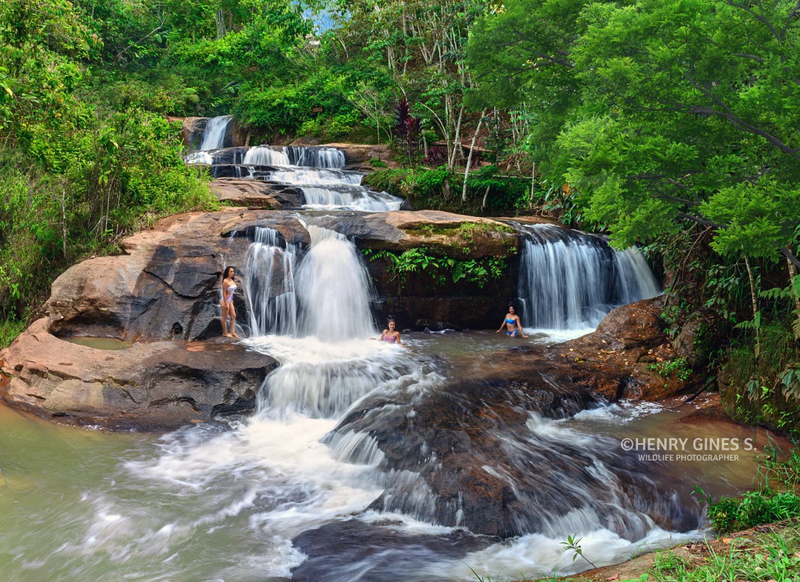
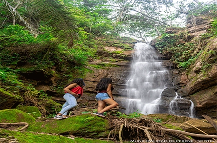
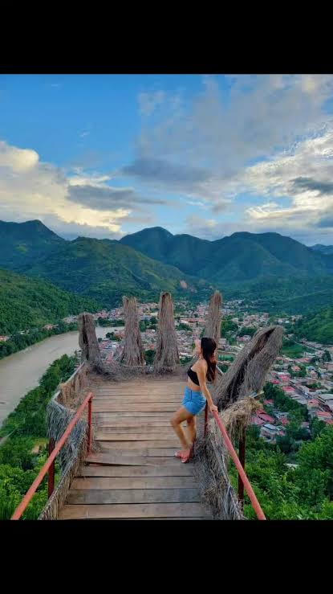
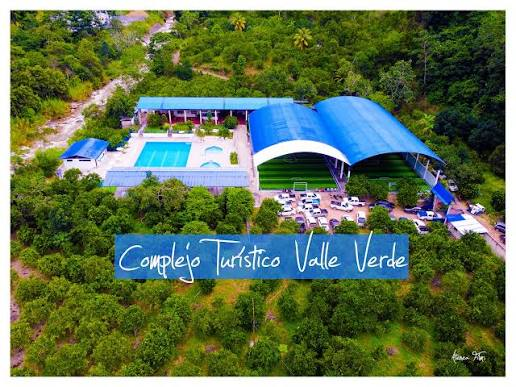
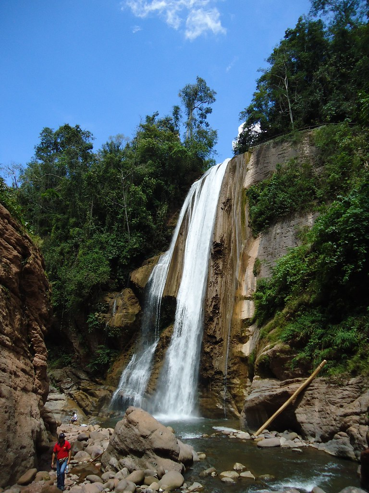

Naturaleza, cultura y aventura en la Selva Central de Perú
Cascadas, cavernas, miradores y sabores que te enamorarán
Descubre nuestros principales atractivos turísticos.

Disfruta de la naturaleza y caídas de agua en una zona de selva alta.
🍲 Juanes — arroz con pollo envuelto en hoja de bijao.
🍲 Tacacho con cecina — plátano asado con cerdo.

Explora formaciones naturales y la riqueza de la selva central.
🍲 Patarashca — pescado envuelto en hoja de plátano.
🍲 Inchicapi — sopa de gallina con maní y yuca.

Paisaje natural rodeado de vegetación y agua cristalina.
🍲 Sopa de camarones de río con hierbas aromáticas.
🍲 Maito de pescado — cocido en hoja de bijao.

Varias caídas de agua en un entorno natural de Río Amarillo.
🍲 Seco de chabelo — plátano verde con carne y ají.
🍲 Chapo — plátano maduro batido con queso fresco.

Lugar con historia y cultura de la Selva Central.
🍲 Caldo de carachama — sopa con pescado de río.
🍲 Ensalada de palmito — fresco con limón y cebolla.

Vista panorámica de los valles y paisajes de Perené.
🍲 Juane de gallina — arroz con gallina en hoja de bijao.
🍲 Ceviche de paiche — pescado de río con limón y ají.

Espacio recreativo natural para disfrutar en familia.
🍲 Crema de ungurahui — preparación tradicional con fruta local.
🍲 Pescado frito con yuca — pescado de río crujiente.

Hermosa caída de agua cerca de Puerto Yurinaki.
🍲 Mazamorra de plátano — postre tradicional.
🍲 Pescado frito con yuca — acompañado de ensalada.
Escanea el código QR en cada atractivo y accede al instante a toda la información turística.
Ubica el código QR instalado en el atractivo turístico.
Utiliza la cámara de tu celular para escanear el código.
Accede a información, imágenes y datos del atractivo.